Tutorial 10 Appendix
10.1 The sim_activity function
Throughout the tutorial we use the sim_activity function for simulating activity patterns. This function simulates realized activity patterns based on a ‘true’ activity pattern distribution density build as specified in equation 1 reported in Tutorial 2 and introduced in "Iannarilli et al. (2024). The arguments of the function specify the following:
M: Numeric. Number of sampling units (e.g. sites).J: Numeric. Number of cycles (e.g. days).wavelength: Numeric. Length of a period (i.e. distance between identical points in a trigonometric function)b0: Numeric. Intercept.b0_constant: Logic. If TRUE (default), b0 is held constant; otherwise time-varying.tau_constant: Logic. If TRUE (default), random intercept is equal to 0 and there is no variability in use among sampling unitssdtau: Numeric. Only if `tau_constant} = FALSE. Random intercept describing variability in use among sampling units coded as a Normal distribution N(0,sdtau).b1: Numeric. Wave amplitude of first cosinusoidal curve.b2: Numeric. Wave amplitude of second cosinusoidal curve.theta0: Numeric. Curve-specific phaseshift for the first cosinusoidal curve.theta1: Numeric. Curve-specific phaseshift for the second cosinusoidal curve.n_peak: Numeric. Number of peak in activity during a period - a day - (e.g. unimodal = 1, bimodal = 2). Must be a positive integer.phaseshift_constant: Logic. Should all the sites have a peak at the same time? (Default = TRUE).sd_phaseshift: Numeric. Variability in timing of peak activity among sites (i.e. standard deviation of the phaseshift in the sinusoidal curve that determines an horizontal shift).n_sim: Numeric. Number of datasets of realized detections to create.plot_true_act: Logic. If TRUE (default), a plot of the conditional and marginal means probability of activity by occasion is returned.
When the goal is simulating diel activity patterns, wavelength can be specified either as the number of hours (i.e. wavelength = 24) or number of minutes (i.e. wavelength = 1440) in the diel cycle. When b2 = 0, the function returns a curve governed only by the first cosine term, and thus a curve with a unimodal pattern (the frequency of the first cosine term is set to 24).
# Load function
source("source_functions/sim_activity.R")
# Set equations' parameters
M = 100
J = 30
wavelength = 24
n_peak = 2
b0 = -3
b1 = 1
b2 = 0
theta0 = 3
theta1 = 2
sd_tau = 1
sd_gamma = 0.3
time <- seq(0, 23, length.out = 100)
# simulate data
dat <- sim_activity(M = M,
J = J,
wavelength = wavelength,
n_peak = n_peak,
n_sim = 1,
b0 = b0,
b0_constant = TRUE, # common intercept
tau_constant = FALSE,
sdtau = sd_tau, # ~site-specific intercept
b1 = b1,
b2 = b2, # amplitude of the cosine terms
theta0 = theta0,
theta1 = theta1, # common phaseshifts for the cosine terms
phaseshift_constant = FALSE,
sd_phaseshift = sd_gamma, # site-specific phaseshift (equal for both cosine terms)
plot_true_act = TRUE)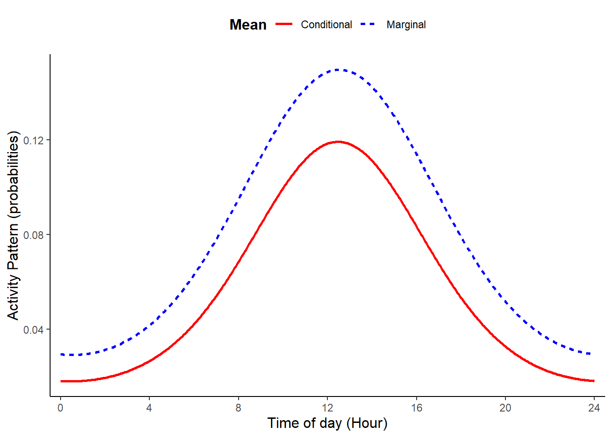
When b2 differs from zero, the function returns a bimodal pattern. The presence of two cosine terms allows us to simulate curves with the two peaks having different heights and, thus, resembling real activity patterns.
# Set equations' parameters (all others as used before)
n_peak = 2
b1 = 0.2
b2 = 0.6
theta0 = 1
theta1 = 2
# simulate data
dat <- sim_activity(M = M,
J = J,
wavelength = wavelength,
n_peak = n_peak,
n_sim = 1,
b0 = b0,
b0_constant = TRUE, # common intercept
tau_constant = FALSE,
sdtau = sd_tau, # ~site-specific intercept
b1 = b1,
b2 = b2, # amplitude of the cosine terms
theta0 = theta0,
theta1 = theta1, # common phaseshifts for the cosine terms
phaseshift_constant = FALSE,
sd_phaseshift = sd_gamma, # site-specific phaseshift (equal for both cosine terms)
plot_true_act = TRUE)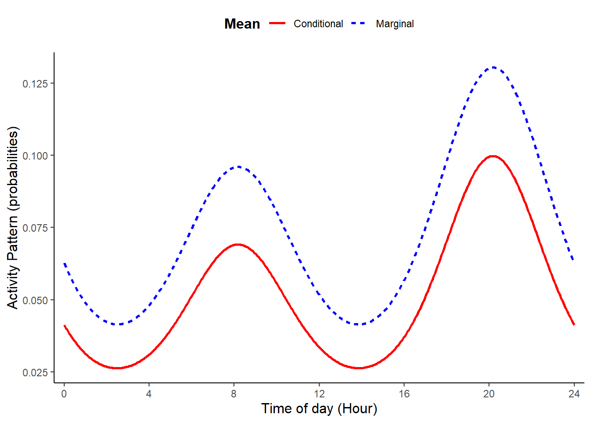
Activity patterns having two peaks that are the same height can be simulated setting b1 = 0, n_peak = 2, and b2 to a value other than zero. These choices silence the first cosine term (with frequency of 24) and impose single cosine with a frequency of 12.
# Set equations' parameters (all others as used before)
n_peak = 2
b1 = 0
b2 = 3
theta0 = 2
theta1 = 2
# simulate data
dat <- sim_activity(M = M,
J = J,
wavelength = wavelength,
n_peak = n_peak,
n_sim = 1,
b0 = b0,
b0_constant = TRUE, # common intercept
tau_constant = FALSE,
sdtau = sd_tau, # ~site-specific intercept
b1 = b1,
b2 = b2, # amplitude of the cosine terms
theta0 = theta0,
theta1 = theta1, # common phaseshifts for the cosine terms
phaseshift_constant = FALSE,
sd_phaseshift = sd_gamma, # site-specific phaseshift (equal for both cosine terms)
plot_true_act = TRUE)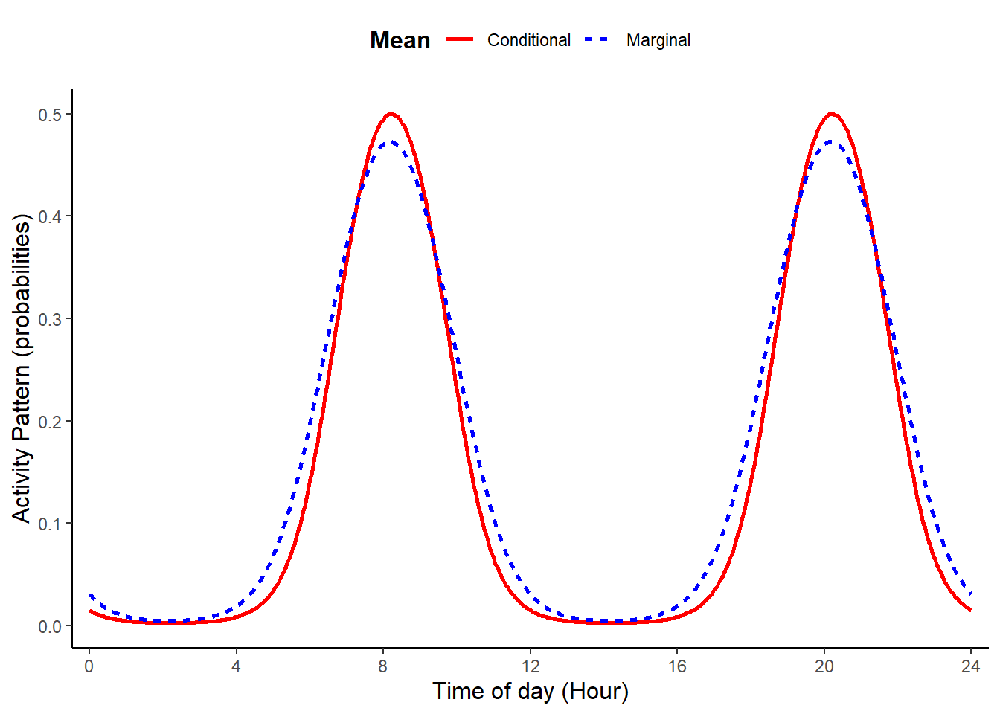
10.2 Binomial versus Other Distributions
How we aggregate observations of activity determines how we model our data. Rees et al. (2024) modeled animal diel activity using a generalized additive modeling approach with a negative binomial distribution after determining there was overdispersion using a Poisson distribution. The Poisson probability density function (PDF) is a special case of the Negative Binomial. Throughout, we have used the binomial probability mass function to model diel activity in both trigonometric GLMMs and cyclic cubic splines HGAMs. The Poisson distribution is in fact a special case of the binomial when the number of ‘trials’ is very large. As such, we can gain similar inference using these different distributions, but we need to think about how sampling effort is accounted for.
In the binomial application, the zeros indicate that a camera was active on a given day, but there was no detection of the species. When using the Poisson or negative binomial distribution to model the counts of detections, we need to include sampling effort (e.g., Rees et al. (2024)). We can do this as an offset within the model, which changes our inference from the expected number of counts to the expected number of counts per unit of effort (i.e. thus modeling a rate). If setup this way, results using these different probability distributions should be quite similar (depending on sample size). There however may be computational benefits modeling counts at very large sample sizes.
Below, we demonstrate the equivalence between using the binomial and Poisson probability distributions when fitting animal activity data using trigonometric and cyclic spline hierarchical models.
10.2.1 Data preparation
We use camera-trap records collected between 2016 and 2018 at 100 locations in Northern Minnesota, USA, (Iannarilli et al. 2021). We use the same data records of American black bear (Ursus americanus) as done in the Tutorial 6.1. However, we ignore the season covariate for simplicity and just focus on modeling the fall data. We first load the occasions_cbind object that we saved in the Tutorial 6.1, then subset the data to only include records related to the Fall season.
# Load Libraries
rm(list = ls())
set.seed(129)
library(dplyr)
library(lubridate)
library(GLMMadaptive)
library(mgcv)
library(ggpubr)
# Load data
occasions_cbind <- read.csv("data_output/occasions_cbind_Ursus_americanus_seasons.csv") %>%
mutate(Site = as.factor(Site))
#Subset the data to the Fall data only, thus removing Spring data.
y_fall <- occasions_cbind[which(occasions_cbind$Season == "F"),]
head(y_fall)## X Site Time Season success failure
## 1 1 10A 0 F 0 100
## 3 3 10A 1 F 0 100
## 5 5 10A 2 F 0 100
## 7 7 10A 3 F 0 100
## 9 9 10A 4 F 0 100
## 11 11 10A 5 F 0 10010.2.2 Trigonometric PDF Comparison
Fit the model using a binomial distribution and then fit the equivalent count-based model with an offset to control for sampling effort.
# Fit the Binomial model
trig_rand_int <- mixed_model(fixed = cbind(success, failure) ~
cos(2 * pi * Time/24) +
sin(2 * pi * Time/24) +
sin(2 * pi * Time/12) +
cos(2 * pi * Time/12) ,
random = ~ 1 | Site,
data = y_fall, family = binomial(), iter_EM = 0)
summary(trig_rand_int)##
## Call:
## mixed_model(fixed = cbind(success, failure) ~ cos(2 * pi * Time/24) +
## sin(2 * pi * Time/24) + sin(2 * pi * Time/12) + cos(2 * pi *
## Time/12), random = ~1 | Site, data = y_fall, family = binomial(),
## iter_EM = 0)
##
## Data Descriptives:
## Number of Observations: 2400
## Number of Groups: 100
##
## Model:
## family: binomial
## link: logit
##
## Fit statistics:
## log.Lik AIC BIC
## -727.3341 1466.668 1482.299
##
## Random effects covariance matrix:
## StdDev
## (Intercept) 1.104286
##
## Fixed effects:
## Estimate Std.Err z-value p-value
## (Intercept) -7.5021 0.1610 -46.6107 < 1e-04
## cos(2 * pi * Time/24) 0.4811 0.1102 4.3649 < 1e-04
## sin(2 * pi * Time/24) -0.5557 0.0989 -5.6179 < 1e-04
## sin(2 * pi * Time/12) -0.1698 0.0980 -1.7323 0.083226
## cos(2 * pi * Time/12) -0.2360 0.0987 -2.3921 0.016751
##
## Integration:
## method: adaptive Gauss-Hermite quadrature rule
## quadrature points: 11
##
## Optimization:
## method: quasi-Newton
## converged: TRUE#Fit Poisson Model with log offset using the variable 'total'
trig_rand_int_P <- mixed_model(fixed = success ~
cos(2 * pi * Time/24) +
sin(2 * pi * Time/24) +
sin(2 * pi * Time/12) +
cos(2 * pi * Time/12) + offset(log(total)),
random = ~ 1 | Site,
data = y_fall, family = poisson(), iter_EM = 0)
summary(trig_rand_int_P)##
## Call:
## mixed_model(fixed = success ~ cos(2 * pi * Time/24) + sin(2 *
## pi * Time/24) + sin(2 * pi * Time/12) + cos(2 * pi * Time/12) +
## offset(log(total)), random = ~1 | Site, data = y_fall, family = poisson(),
## iter_EM = 0)
##
## Data Descriptives:
## Number of Observations: 2400
## Number of Groups: 100
##
## Model:
## family: poisson
## link: log
##
## Fit statistics:
## log.Lik AIC BIC
## -727.3675 1466.735 1482.366
##
## Random effects covariance matrix:
## StdDev
## (Intercept) 1.101219
##
## Fixed effects:
## Estimate Std.Err z-value p-value
## (Intercept) -7.5017 0.1606 -46.6996 < 1e-04
## cos(2 * pi * Time/24) 0.4799 0.1101 4.3582 < 1e-04
## sin(2 * pi * Time/24) -0.5540 0.0988 -5.6074 < 1e-04
## sin(2 * pi * Time/12) -0.1690 0.0979 -1.7259 0.084364
## cos(2 * pi * Time/12) -0.2353 0.0985 -2.3876 0.016960
##
## Integration:
## method: adaptive Gauss-Hermite quadrature rule
## quadrature points: 11
##
## Optimization:
## method: quasi-Newton
## converged: TRUEFirst, note the similarity in the coefficient estimates. Next, we can predict the diel activity for each model. Note that to be equivalent, we need to consider the same predictions for 1 unit of sampling effort, thus we use ‘total = 1’.
newdat <- with(occasions_cbind, expand.grid(Time = seq(0, 24, length.out = 24), total=1))
pred_rand_int <- effectPlotData(trig_rand_int, newdat, marginal = FALSE)
pred_rand_int_P <- effectPlotData(trig_rand_int_P, newdat, marginal = FALSE) Now, we can plot the activity predictions from both models.
# plot 1
pl_trig1 <- ggplot(pred_rand_int, aes(Time, plogis(pred))) +
geom_ribbon(aes(ymin = plogis(low), ymax = plogis(upp)), alpha = 0.1, linewidth = 0.25) +
geom_line(aes(), linewidth = 1) +
labs(x = "Time of Day (Hour)", y = "Predicted Activity Pattern \n (probability)", title = "B: Trigonometric Binomial Model")+
theme_minimal()+
theme(legend.position = "bottom",
legend.title = element_blank(),
legend.text = element_text(size=10,face="bold"),
legend.margin=margin(0,0,0,0),
legend.box.margin=margin(-5,-10,-10,-10),
plot.title = element_text(size=10,face="bold"),
axis.line = element_line(colour = 'black', linetype = 'solid'),
axis.ticks = element_line(colour = 'black', linetype = 'solid'),
axis.title = element_text(size=9,face="bold"),
panel.grid.minor.y = element_blank(),
panel.grid.major.y = element_blank(),
panel.grid.major.x = element_line(colour = 'lightgrey', linetype = 'dashed', linewidth=0.5),
panel.grid.minor.x = element_blank(),
strip.text = element_text(size = 9, colour = "black", face = "bold", hjust = 0))+
scale_x_continuous(breaks=seq(0,23,length.out=7), labels=seq(0,24,4))
# plot 2
pl_trig1_P <- ggplot(pred_rand_int_P, aes(Time, plogis(pred))) +
geom_ribbon(aes(ymin = plogis(low), ymax = plogis(upp)), alpha = 0.1, linewidth = 0.25) +
geom_line(aes(), linewidth = 1) +
labs(x = "Time of Day (Hour)", y = "Predicted Activity Pattern \n (probability)", title = "A: Trigonometric Poisson Model ")+
theme_minimal()+
theme(legend.position = "bottom",
legend.title = element_blank(),
legend.text = element_text(size=10,face="bold"),
legend.margin=margin(0,0,0,0),
legend.box.margin=margin(-5,-10,-10,-10),
plot.title = element_text(size=10,face="bold"),
axis.line = element_line(colour = 'black', linetype = 'solid'),
axis.ticks = element_line(colour = 'black', linetype = 'solid'),
axis.title = element_text(size=9,face="bold"),
panel.grid.minor.y = element_blank(),
panel.grid.major.y = element_blank(),
panel.grid.major.x = element_line(colour = 'lightgrey', linetype = 'dashed', linewidth=0.5),
panel.grid.minor.x = element_blank(),
strip.text = element_text(size = 9, colour = "black", face = "bold", hjust = 0))+
scale_x_continuous(breaks=seq(0,23,length.out=7), labels=seq(0,24,4))
ggarrange(pl_trig1_P, pl_trig1)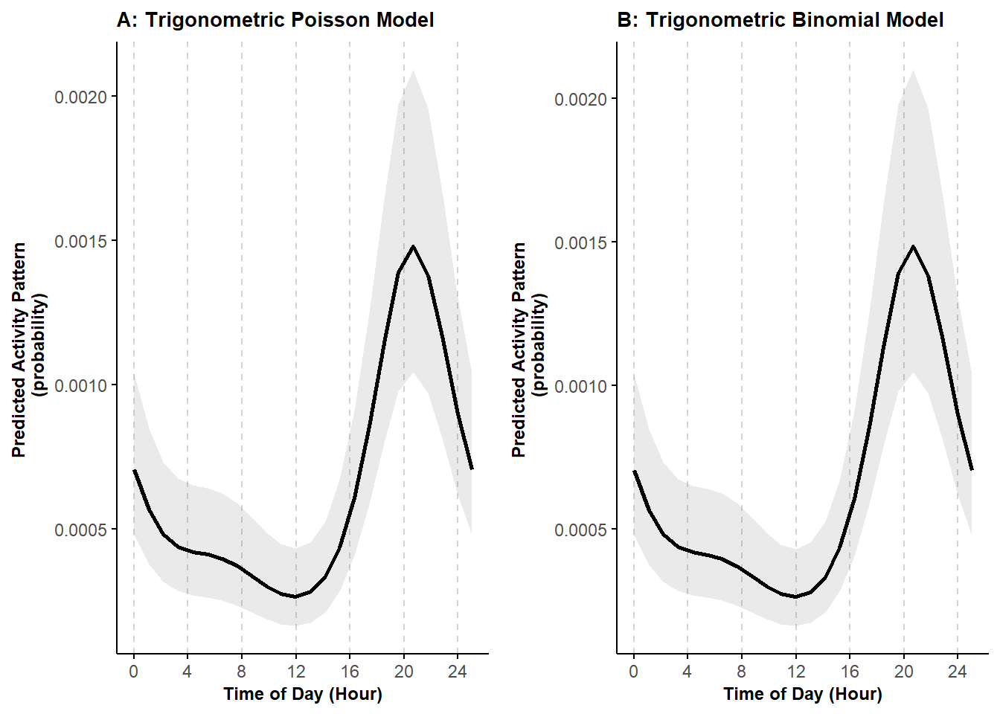
We can see that the predictions are equivalent.
10.2.3 Cyclic cubic PDF Comparison
Now, let’s do the same comparison when fitting models in a generalized additive model framework.
# Fit binomial model
mod_cycl <- bam(cbind(success, failure) ~
s(Time, bs = "cc", k = 12) +
s(Site, bs = "re"),
knots = list(Time = c(0,23)),
family = "binomial",
data = y_fall)
# Predict activity patterns
newdat <- with(occasions_cbind, expand.grid(Time = seq(0, 24, length.out=24),total=1,
Site = "7B")) #Station doesn't matter
# Create predictions and confidence intervals
cycl_pred <- predict.bam(mod_cycl, newdata = newdat, exclude = "s(Site)", se.fit = TRUE, type = "link")
cycl_pred$low <- cycl_pred$fit - (1.96 * cycl_pred$se.fit)
cycl_pred$upp <- cycl_pred$fit + (1.96 * cycl_pred$se.fit)
cycl_pred$Time <- newdat$Time
cycl_pred <- data.frame(cycl_pred)
#Fit Poisson model
mod_cycl_P <- bam(success ~
s(Time, bs = "cc", k = 12) +
s(Site, bs = "re") + offset(log(total)),
knots = list(Time = c(0,23)),
family = "poisson",
data = y_fall)
# Create predictions and confidence intervals
cycl_pred_P <- predict.bam(mod_cycl_P, newdata = newdat, exclude = "s(Site)", se.fit = TRUE, type = "link")
cycl_pred_P$low <- cycl_pred_P$fit - (1.96 * cycl_pred_P$se.fit)
cycl_pred_P$upp <- cycl_pred_P$fit + (1.96 * cycl_pred_P$se.fit)
cycl_pred_P$Time <- newdat$Time
cycl_pred_P <- data.frame(cycl_pred_P)Now, we can plot the activity predictions from both models.
# plot 1
pl_cycle1 <- ggplot(cycl_pred, aes(Time, plogis(fit))) +
geom_ribbon(aes(ymin = plogis(low), ymax = plogis(upp)), alpha = 0.1, linewidth = 0.25) +
geom_line(aes(), linewidth = 1) +
labs(x = "Time of Day (Hour)", y = "Predicted Activity Pattern \n (probability)", title = "A: Hierarhical GAM - Binomial")+
theme_minimal()+
theme(legend.position = "bottom",
legend.title = element_blank(),
legend.text = element_text(size=10,face="bold"),
legend.margin=margin(0,0,0,0),
legend.box.margin=margin(-5,-10,-10,-10),
plot.title = element_text(size=10,face="bold"),
axis.line = element_line(colour = 'black', linetype = 'solid'),
axis.ticks = element_line(colour = 'black', linetype = 'solid'),
axis.title = element_text(size=9,face="bold"),
panel.grid.minor.y = element_blank(),
panel.grid.major.y = element_blank(),
panel.grid.major.x = element_line(colour = 'lightgrey', linetype = 'dashed', linewidth=0.5),
panel.grid.minor.x = element_blank(),
strip.text = element_text(size = 9, colour = "black", face = "bold", hjust = 0))+
scale_x_continuous(breaks=seq(0,23,length.out=7), labels=seq(0,24,4))
#plot 2
pl_cycle1_P <- ggplot(cycl_pred, aes(Time, plogis(fit))) +
geom_ribbon(aes(ymin = plogis(low), ymax = plogis(upp)), alpha = 0.1, linewidth = 0.25) +
geom_line(aes(), linewidth = 1) +
labs(x = "Time of Day (Hour)", y = "Predicted Activity Pattern \n (probability)", title = "B: Hierarhical GAM - Poisson")+
theme_minimal()+
theme(legend.position = "bottom",
legend.title = element_blank(),
legend.text = element_text(size=10,face="bold"),
legend.margin=margin(0,0,0,0),
legend.box.margin=margin(-5,-10,-10,-10),
plot.title = element_text(size=10,face="bold"),
axis.line = element_line(colour = 'black', linetype = 'solid'),
axis.ticks = element_line(colour = 'black', linetype = 'solid'),
axis.title = element_text(size=9,face="bold"),
panel.grid.minor.y = element_blank(),
panel.grid.major.y = element_blank(),
panel.grid.major.x = element_line(colour = 'lightgrey', linetype = 'dashed', linewidth=0.5),
panel.grid.minor.x = element_blank(),
strip.text = element_text(size = 9, colour = "black", face = "bold", hjust = 0))+
scale_x_continuous(breaks=seq(0,23,length.out=7), labels=seq(0,24,4))
ggarrange(pl_cycle1_P, pl_cycle1)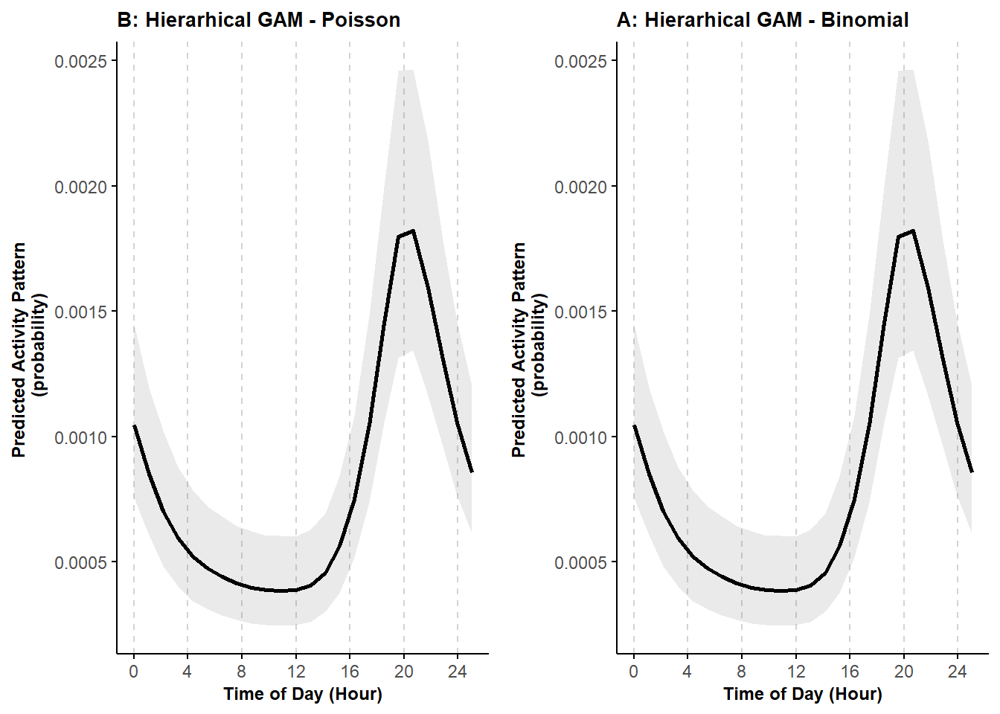
Again, we can see that the predictions are equivalent.
10.2.4 Not Controlling for Sampling Effort
Let’s see what happens when we don’t control for sampling effort using the Poisson PDF.
#Fit Poisson model
mod_cycl_P2 <- bam(success ~
s(Time, bs = "cc", k = 12) +
s(Site, bs="re"),
knots = list(Time=c(0,23)),
family = "poisson",
data = y_fall)
# Create predictions and confidence intervals
newdat <- with(occasions_cbind, expand.grid(Time = seq(0, 24, length.out=24),
Site = "7B")) #Station doesn't matter
cycl_pred_P2 <- predict.bam(mod_cycl_P2, newdata = newdat, exclude = "s(Site)", se.fit = TRUE, type = "link")
cycl_pred_P2$low <- cycl_pred_P2$fit - (1.96 * cycl_pred_P2$se.fit)
cycl_pred_P2$upp <- cycl_pred_P2$fit + (1.96 * cycl_pred_P2$se.fit)
cycl_pred_P2$Time <- newdat$Time
cycl_pred_P2 <- data.frame(cycl_pred_P2)Let’s plot this model output compared to the above Poisson model where we do control for sampling effort.
pl_cycle1_P2 <- ggplot(cycl_pred_P2, aes(Time, plogis(fit))) +
geom_ribbon(aes(ymin = plogis(low), ymax = plogis(upp)), alpha = 0.1, linewidth = 0.25) +
geom_line(aes(), linewidth = 1) +
labs(x = "Time of Day (Hour)", y = "Predicted Activity Pattern \n (probability)", title = "C: Hierarhical GAM - Poisson NO OFFSET")+
theme_minimal()+
theme(legend.position = "bottom",
legend.title = element_blank(),
legend.text = element_text(size=10,face="bold"),
legend.margin=margin(0,0,0,0),
legend.box.margin=margin(-5,-10,-10,-10),
plot.title = element_text(size=10,face="bold"),
axis.line = element_line(colour = 'black', linetype = 'solid'),
axis.ticks = element_line(colour = 'black', linetype = 'solid'),
axis.title = element_text(size=9,face="bold"),
panel.grid.minor.y = element_blank(),
panel.grid.major.y = element_blank(),
panel.grid.major.x = element_line(colour = 'lightgrey', linetype = 'dashed', linewidth=0.5),
panel.grid.minor.x = element_blank(),
strip.text = element_text(size = 9, colour = "black", face = "bold", hjust = 0))+
scale_x_continuous(breaks=seq(0,23,length.out=7), labels=seq(0,24,4))
ggarrange(pl_cycle1_P, pl_cycle1_P2)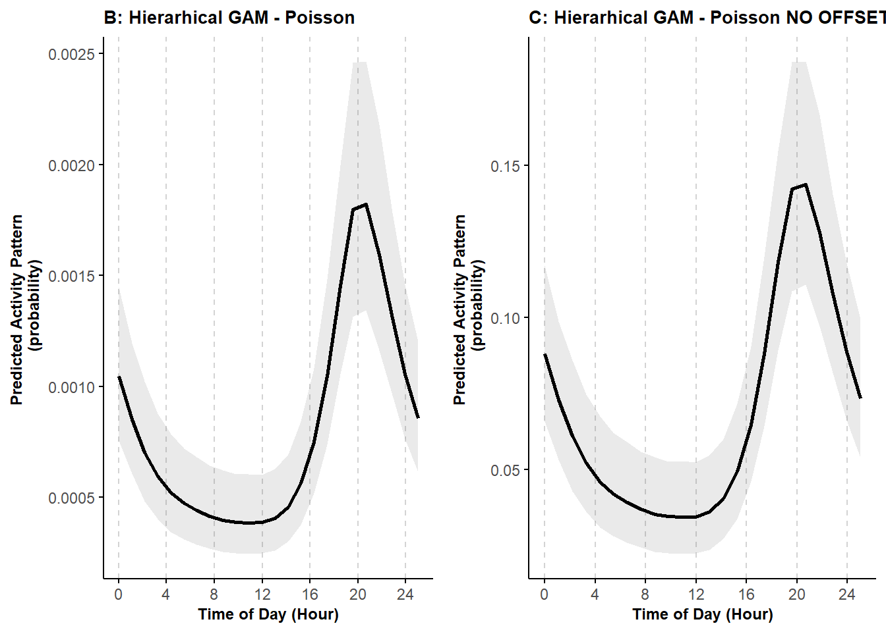
We can see that the activity curves have the same shape, but the magnitude on the y-axis is different. Using the offset allows us to better represent animal activity in terms of when they are active and not active.
10.3 Activity patterns in the Bayesian framework
Here, we use simulated data to illustrate how to fit Bayesian versions of the cyclic cubic spline hierarchical models. In particular, we briefly demonstrate how the brms package (Bürkner 2021a) can be used to fit an HGAM with random-intercepts.
10.3.1 Data Preparation
We simulate data using the same approach and the same parameters presented in Tutorial 3. As such, the simulated data are generated from the same ‘true’ activity patterns.
# Load libraries and function to simulate activity patterns
rm(list = ls())
set.seed(129)
library(dplyr)
library(nimble)
library(tidyr)
library(brms)## Warning: package 'brms' was built under R version 4.2.3## Warning: package 'Rcpp' was built under R version 4.2.3source("source_functions/sim_activity.R")
source("source_functions/sim_to_minute.R")
# Set equations' parameters
M = 100 # The number of sites
J = 30 # the number of binomial trials
wavelength = 24 # 24 hour period
n_peak = 2 # number of activity peaks
b0 = -3
b1 = 1
b2 = 0.7
theta0 = 3
theta1 = 2
sd_tau = 1
sd_gamma = 0.3
time <- seq(0, wavelength, wavelength/512)
dat <- sim_activity(M = M,
J = J,
wavelength = wavelength,
n_peak = n_peak,
n_sim = 1, #number of simulated datasets
b0 = -3,
b0_constant = TRUE, # common intercept
tau_constant = FALSE,
sdtau = sd_tau, # ~site-specific intercept
b1 = b1,
b2 = b2, # amplitude of the cosine terms
theta0 = theta0,
theta1 = theta1, # common phaseshifts for the cosine terms
phaseshift_constant = FALSE,
sd_phaseshift = sd_gamma, # site-specific phaseshift (equal for both cosine terms)
plot_true_act = TRUE
)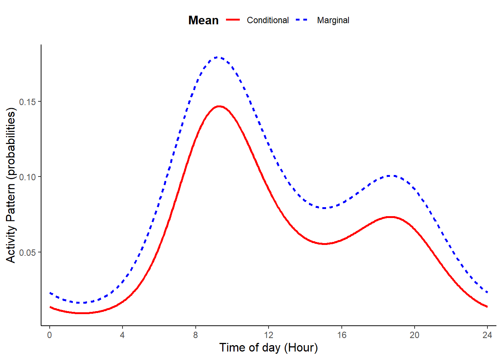
## [1] 100 720The first step is to rearrange the specific format of the data created by the sim_activity function (see also Tutorial 3).
## [1] 100 720# summarize aggregated data
y <- data.frame(id=paste("A", seq(1,M,1), sep=""),
y=as.data.frame(y)
)
colnames(y) <- c("id",
paste0("S", seq(1, ncol(y)-1, 1), sep="")
)
# Format data in long format
y_long <- pivot_longer(data = y, cols = -id, names_to = "time", values_to = "y") %>%
mutate(time=as.numeric(substr(time,2,10)),
id = factor(id)
)
# create variable to describe time as hour (between 0 and 23)
y_long$hour <- sim_to_minute(y_long$time, group = wavelength)# count successes and failures at each site-occasion
occasions_cbind <- y_long %>%
group_by(id, hour) %>%
summarise(success = sum(y),
n_events = n(),
failure = n_events - success
) %>%
dplyr::rename(Site = id,
Time = hour
)
# show first few rows of the dataset created
knitr::kable(head(occasions_cbind))| Site | Time | success | n_events | failure |
|---|---|---|---|---|
| A1 | 0 | 0 | 30 | 30 |
| A1 | 1 | 1 | 30 | 29 |
| A1 | 2 | 0 | 30 | 30 |
| A1 | 3 | 1 | 30 | 29 |
| A1 | 4 | 1 | 30 | 29 |
| A1 | 5 | 0 | 30 | 30 |
10.3.2 Model Setup and Fitting
We are now ready to setup the Bayesian cyclic cubic spline model using code similar to that shown in Tutorial 3. However, here we wrap our code in the brm function from the package brms (Bürkner 2021a). We also need to change our notation slightly to specify the number of successes and the number of trials using success| trials(n_events). Note that below, we only consider random intercepts, but we could also include random slopes by adding s(Time, Site, bs="re").
The random intercept can be specified in one of two ways, s(Site, bs="re") or (1 | Site). Note that brms functions do not allow excluding smooth terms, such as s(Site, bs="re") when making predictions (see here), so the latter approach is necessary if we want to estimate the conditional mean for a typical site. We compare these two approaches, below.
# Setup the model but do not fit it (i.e., chains = 0)
cycl_rand_int_setup <- brms::brm(bf(success| trials(n_events) ~ s(Time, bs = "cc", k = wavelength) +
s(Site, bs="re")
),
family = "binomial",
data = occasions_cbind,
knots = list(Time = c(0,23)),
cores = 1,
seed = 17,
chains=0
)## Compiling Stan program...## Start sampling## the number of chains is less than 1; sampling not donecycl_rand_int_setup_alt <- brms::brm(bf(success| trials(n_events) ~ s(Time, bs = "cc", k = wavelength) +
(1|Site)
),
family = "binomial",
data = occasions_cbind,
knots = list(Time = c(0,23)),
cores = 1,
seed = 17,
chains=0
)## Compiling Stan program...## Start sampling## the number of chains is less than 1; sampling not done# Now fit the model
cycl_rand_int <- update(cycl_rand_int_setup,
recompile = FALSE,
newdata = occasions_cbind,
chains = 3
)## Start sampling##
## SAMPLING FOR MODEL 'anon_model' NOW (CHAIN 1).
## Chain 1:
## Chain 1: Gradient evaluation took 0.002284 seconds
## Chain 1: 1000 transitions using 10 leapfrog steps per transition would take 22.84 seconds.
## Chain 1: Adjust your expectations accordingly!
## Chain 1:
## Chain 1:
## Chain 1: Iteration: 1 / 2000 [ 0%] (Warmup)
## Chain 1: Iteration: 200 / 2000 [ 10%] (Warmup)
## Chain 1: Iteration: 400 / 2000 [ 20%] (Warmup)
## Chain 1: Iteration: 600 / 2000 [ 30%] (Warmup)
## Chain 1: Iteration: 800 / 2000 [ 40%] (Warmup)
## Chain 1: Iteration: 1000 / 2000 [ 50%] (Warmup)
## Chain 1: Iteration: 1001 / 2000 [ 50%] (Sampling)
## Chain 1: Iteration: 1200 / 2000 [ 60%] (Sampling)
## Chain 1: Iteration: 1400 / 2000 [ 70%] (Sampling)
## Chain 1: Iteration: 1600 / 2000 [ 80%] (Sampling)
## Chain 1: Iteration: 1800 / 2000 [ 90%] (Sampling)
## Chain 1: Iteration: 2000 / 2000 [100%] (Sampling)
## Chain 1:
## Chain 1: Elapsed Time: 95.6 seconds (Warm-up)
## Chain 1: 68.467 seconds (Sampling)
## Chain 1: 164.067 seconds (Total)
## Chain 1:
##
## SAMPLING FOR MODEL 'anon_model' NOW (CHAIN 2).
## Chain 2:
## Chain 2: Gradient evaluation took 0.00133 seconds
## Chain 2: 1000 transitions using 10 leapfrog steps per transition would take 13.3 seconds.
## Chain 2: Adjust your expectations accordingly!
## Chain 2:
## Chain 2:
## Chain 2: Iteration: 1 / 2000 [ 0%] (Warmup)
## Chain 2: Iteration: 200 / 2000 [ 10%] (Warmup)
## Chain 2: Iteration: 400 / 2000 [ 20%] (Warmup)
## Chain 2: Iteration: 600 / 2000 [ 30%] (Warmup)
## Chain 2: Iteration: 800 / 2000 [ 40%] (Warmup)
## Chain 2: Iteration: 1000 / 2000 [ 50%] (Warmup)
## Chain 2: Iteration: 1001 / 2000 [ 50%] (Sampling)
## Chain 2: Iteration: 1200 / 2000 [ 60%] (Sampling)
## Chain 2: Iteration: 1400 / 2000 [ 70%] (Sampling)
## Chain 2: Iteration: 1600 / 2000 [ 80%] (Sampling)
## Chain 2: Iteration: 1800 / 2000 [ 90%] (Sampling)
## Chain 2: Iteration: 2000 / 2000 [100%] (Sampling)
## Chain 2:
## Chain 2: Elapsed Time: 85.18 seconds (Warm-up)
## Chain 2: 78.689 seconds (Sampling)
## Chain 2: 163.869 seconds (Total)
## Chain 2:
##
## SAMPLING FOR MODEL 'anon_model' NOW (CHAIN 3).
## Chain 3:
## Chain 3: Gradient evaluation took 0.001127 seconds
## Chain 3: 1000 transitions using 10 leapfrog steps per transition would take 11.27 seconds.
## Chain 3: Adjust your expectations accordingly!
## Chain 3:
## Chain 3:
## Chain 3: Iteration: 1 / 2000 [ 0%] (Warmup)
## Chain 3: Iteration: 200 / 2000 [ 10%] (Warmup)
## Chain 3: Iteration: 400 / 2000 [ 20%] (Warmup)
## Chain 3: Iteration: 600 / 2000 [ 30%] (Warmup)
## Chain 3: Iteration: 800 / 2000 [ 40%] (Warmup)
## Chain 3: Iteration: 1000 / 2000 [ 50%] (Warmup)
## Chain 3: Iteration: 1001 / 2000 [ 50%] (Sampling)
## Chain 3: Iteration: 1200 / 2000 [ 60%] (Sampling)
## Chain 3: Iteration: 1400 / 2000 [ 70%] (Sampling)
## Chain 3: Iteration: 1600 / 2000 [ 80%] (Sampling)
## Chain 3: Iteration: 1800 / 2000 [ 90%] (Sampling)
## Chain 3: Iteration: 2000 / 2000 [100%] (Sampling)
## Chain 3:
## Chain 3: Elapsed Time: 85.406 seconds (Warm-up)
## Chain 3: 77.766 seconds (Sampling)
## Chain 3: 163.172 seconds (Total)
## Chain 3:## Warning: Bulk Effective Samples Size (ESS) is too low, indicating posterior means and medians may be unreliable.
## Running the chains for more iterations may help. See
## https://mc-stan.org/misc/warnings.html#bulk-esscycl_rand_int_alt <- update(cycl_rand_int_setup_alt,
recompile = FALSE,
newdata = occasions_cbind,
chains = 3
)## Start sampling##
## SAMPLING FOR MODEL 'anon_model' NOW (CHAIN 1).
## Chain 1:
## Chain 1: Gradient evaluation took 0.001459 seconds
## Chain 1: 1000 transitions using 10 leapfrog steps per transition would take 14.59 seconds.
## Chain 1: Adjust your expectations accordingly!
## Chain 1:
## Chain 1:
## Chain 1: Iteration: 1 / 2000 [ 0%] (Warmup)
## Chain 1: Iteration: 200 / 2000 [ 10%] (Warmup)
## Chain 1: Iteration: 400 / 2000 [ 20%] (Warmup)
## Chain 1: Iteration: 600 / 2000 [ 30%] (Warmup)
## Chain 1: Iteration: 800 / 2000 [ 40%] (Warmup)
## Chain 1: Iteration: 1000 / 2000 [ 50%] (Warmup)
## Chain 1: Iteration: 1001 / 2000 [ 50%] (Sampling)
## Chain 1: Iteration: 1200 / 2000 [ 60%] (Sampling)
## Chain 1: Iteration: 1400 / 2000 [ 70%] (Sampling)
## Chain 1: Iteration: 1600 / 2000 [ 80%] (Sampling)
## Chain 1: Iteration: 1800 / 2000 [ 90%] (Sampling)
## Chain 1: Iteration: 2000 / 2000 [100%] (Sampling)
## Chain 1:
## Chain 1: Elapsed Time: 87.589 seconds (Warm-up)
## Chain 1: 70.046 seconds (Sampling)
## Chain 1: 157.635 seconds (Total)
## Chain 1:
##
## SAMPLING FOR MODEL 'anon_model' NOW (CHAIN 2).
## Chain 2:
## Chain 2: Gradient evaluation took 0.001179 seconds
## Chain 2: 1000 transitions using 10 leapfrog steps per transition would take 11.79 seconds.
## Chain 2: Adjust your expectations accordingly!
## Chain 2:
## Chain 2:
## Chain 2: Iteration: 1 / 2000 [ 0%] (Warmup)
## Chain 2: Iteration: 200 / 2000 [ 10%] (Warmup)
## Chain 2: Iteration: 400 / 2000 [ 20%] (Warmup)
## Chain 2: Iteration: 600 / 2000 [ 30%] (Warmup)
## Chain 2: Iteration: 800 / 2000 [ 40%] (Warmup)
## Chain 2: Iteration: 1000 / 2000 [ 50%] (Warmup)
## Chain 2: Iteration: 1001 / 2000 [ 50%] (Sampling)
## Chain 2: Iteration: 1200 / 2000 [ 60%] (Sampling)
## Chain 2: Iteration: 1400 / 2000 [ 70%] (Sampling)
## Chain 2: Iteration: 1600 / 2000 [ 80%] (Sampling)
## Chain 2: Iteration: 1800 / 2000 [ 90%] (Sampling)
## Chain 2: Iteration: 2000 / 2000 [100%] (Sampling)
## Chain 2:
## Chain 2: Elapsed Time: 84.638 seconds (Warm-up)
## Chain 2: 72.39 seconds (Sampling)
## Chain 2: 157.028 seconds (Total)
## Chain 2:
##
## SAMPLING FOR MODEL 'anon_model' NOW (CHAIN 3).
## Chain 3:
## Chain 3: Gradient evaluation took 0.001337 seconds
## Chain 3: 1000 transitions using 10 leapfrog steps per transition would take 13.37 seconds.
## Chain 3: Adjust your expectations accordingly!
## Chain 3:
## Chain 3:
## Chain 3: Iteration: 1 / 2000 [ 0%] (Warmup)
## Chain 3: Iteration: 200 / 2000 [ 10%] (Warmup)
## Chain 3: Iteration: 400 / 2000 [ 20%] (Warmup)
## Chain 3: Iteration: 600 / 2000 [ 30%] (Warmup)
## Chain 3: Iteration: 800 / 2000 [ 40%] (Warmup)
## Chain 3: Iteration: 1000 / 2000 [ 50%] (Warmup)
## Chain 3: Iteration: 1001 / 2000 [ 50%] (Sampling)
## Chain 3: Iteration: 1200 / 2000 [ 60%] (Sampling)
## Chain 3: Iteration: 1400 / 2000 [ 70%] (Sampling)
## Chain 3: Iteration: 1600 / 2000 [ 80%] (Sampling)
## Chain 3: Iteration: 1800 / 2000 [ 90%] (Sampling)
## Chain 3: Iteration: 2000 / 2000 [100%] (Sampling)
## Chain 3:
## Chain 3: Elapsed Time: 76.929 seconds (Warm-up)
## Chain 3: 61.079 seconds (Sampling)
## Chain 3: 138.008 seconds (Total)
## Chain 3:## Warning: Bulk Effective Samples Size (ESS) is too low, indicating posterior means and medians may be unreliable.
## Running the chains for more iterations may help. See
## https://mc-stan.org/misc/warnings.html#bulk-ess10.3.3 Model Assessment
For Bayesian models, we need to investigate parameter posterior distributions to evaluate whether there is evidence they have converged and thus are reliable to be used for inference. There are plenty of ways to conduct MCMC diagnostics (e.g., Roy (2019)). A good first step, is to simply visualize the posterior distributions as ‘traceplots’ and ‘density plots’ for each chain (independent model fit) to evaluate whether 1) different chains for each parameter are largely the same (plotted on top of each other), and 2) there is good ‘mixing’ within chain for each parameter. Mixing refers to the process of how the MCMC explores the parameter space to ‘fill out’ the full posterior distribution; good mixing can generally be assessed visually where the traceplot looks like a ‘hairy caterpillar’ and density plots look smooth. For a simple introduction see Denis Valle’s How do I tell if my MCMC has converged? and for additional details, see MCMC diagnostics.
## No divergences to plot.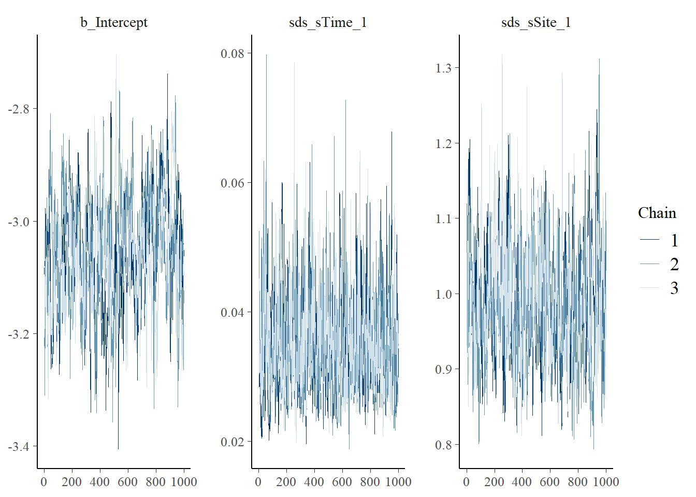
## No divergences to plot.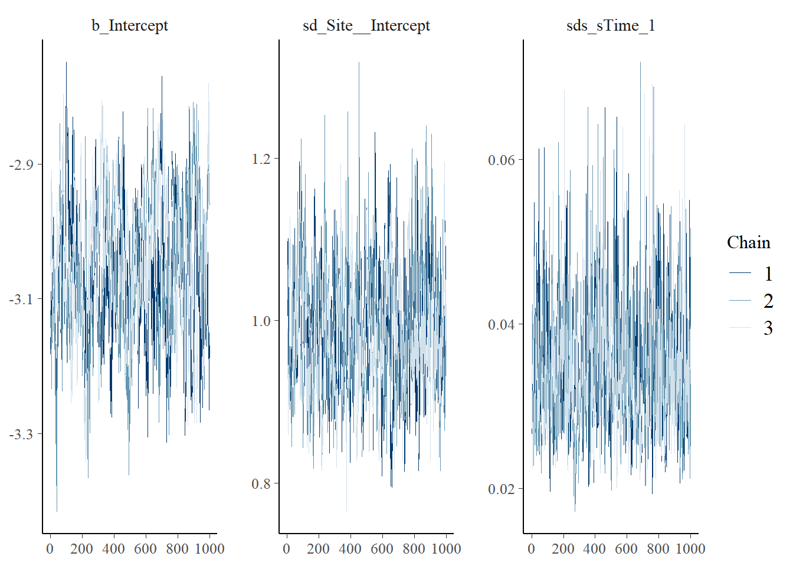
# Look at the coefficients for the two models and note their equivalence (parameters displayed in different orders)
mcmc_plot(cycl_rand_int,
type = "areas",
prob = 0.95
)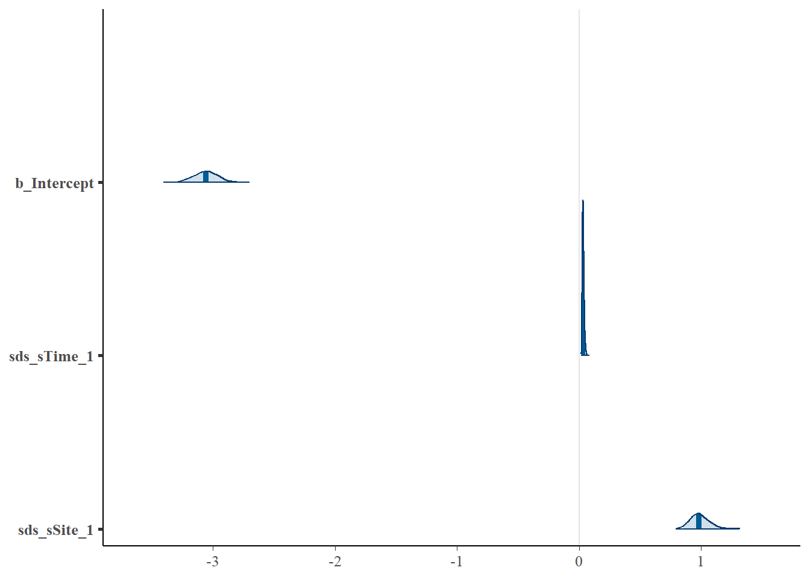
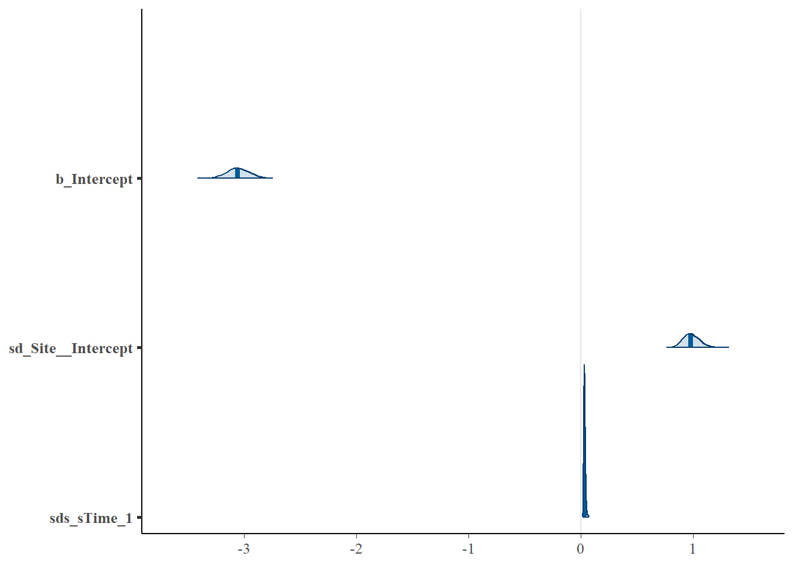
## Family: binomial
## Links: mu = logit
## Formula: success | trials(n_events) ~ s(Time, bs = "cc", k = wavelength) + s(Site, bs = "re")
## Data: occasions_cbind (Number of observations: 2400)
## Draws: 3 chains, each with iter = 2000; warmup = 1000; thin = 1;
## total post-warmup draws = 3000
##
## Smoothing Spline Hyperparameters:
## Estimate Est.Error l-95% CI u-95% CI Rhat Bulk_ESS Tail_ESS
## sds(sTime_1) 0.04 0.01 0.02 0.05 1.00 559 925
## sds(sSite_1) 0.99 0.08 0.86 1.15 1.01 370 636
##
## Regression Coefficients:
## Estimate Est.Error l-95% CI u-95% CI Rhat Bulk_ESS Tail_ESS
## Intercept -3.06 0.10 -3.25 -2.86 1.03 125 467
##
## Draws were sampled using sampling(NUTS). For each parameter, Bulk_ESS
## and Tail_ESS are effective sample size measures, and Rhat is the potential
## scale reduction factor on split chains (at convergence, Rhat = 1).## Family: binomial
## Links: mu = logit
## Formula: success | trials(n_events) ~ s(Time, bs = "cc", k = wavelength) + (1 | Site)
## Data: occasions_cbind (Number of observations: 2400)
## Draws: 3 chains, each with iter = 2000; warmup = 1000; thin = 1;
## total post-warmup draws = 3000
##
## Smoothing Spline Hyperparameters:
## Estimate Est.Error l-95% CI u-95% CI Rhat Bulk_ESS Tail_ESS
## sds(sTime_1) 0.03 0.01 0.02 0.05 1.00 631 1161
##
## Multilevel Hyperparameters:
## ~Site (Number of levels: 100)
## Estimate Est.Error l-95% CI u-95% CI Rhat Bulk_ESS Tail_ESS
## sd(Intercept) 0.99 0.07 0.85 1.14 1.01 382 625
##
## Regression Coefficients:
## Estimate Est.Error l-95% CI u-95% CI Rhat Bulk_ESS Tail_ESS
## Intercept -3.06 0.10 -3.25 -2.86 1.03 110 433
##
## Draws were sampled using sampling(NUTS). For each parameter, Bulk_ESS
## and Tail_ESS are effective sample size measures, and Rhat is the potential
## scale reduction factor on split chains (at convergence, Rhat = 1).10.3.4 Model Predictions
We use the first parameterization (with s(Site, bs="re")) to explore site-level variability in the activity patterns:
# Predict the mean site-level activity pattern
newdata <- data.frame(Time=0:23,
Site = occasions_cbind$Site,
n_events=1
)
preds <- fitted(cycl_rand_int,scale="response",newdata=newdata)
preds <- data.frame(newdata,preds)
head(preds)## Time Site n_events Estimate Est.Error Q2.5 Q97.5
## 1 0 A1 1 0.005892358 0.001505928 0.003362585 0.009176446
## 2 1 A1 1 0.004425826 0.001169577 0.002492922 0.007027831
## 3 2 A1 1 0.003774225 0.001005591 0.002106514 0.006022182
## 4 3 A1 1 0.004325475 0.001148243 0.002442596 0.006882073
## 5 4 A1 1 0.006203072 0.001630072 0.003541543 0.009727854
## 6 5 A1 1 0.010500089 0.002700026 0.006058918 0.016462475# Plot site level mean activity
ggplot(aes(x=Time, y=Estimate, group=Site, color=Site), data=preds) +
geom_line() +
theme_minimal() +
theme(legend.position = "none")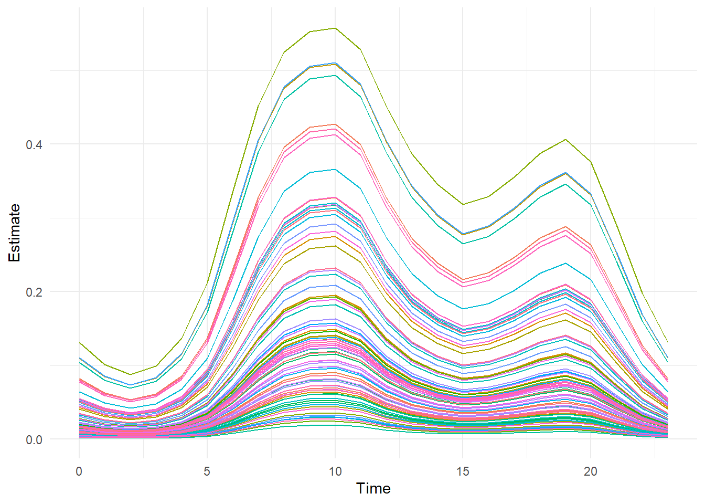
We can then approximate the marginal mean activity curve by averaging across the site-level variation.
#Average across sites to get the marginal mean
marginal.mean = aggregate(preds$Estimate, list(preds$Time), FUN=mean)
marginal.lower = aggregate(preds$Q2.5, list(preds$Time), FUN=mean)
marginal.upper = aggregate(preds$Q97.5, list(preds$Time), FUN=mean)
# Plot the marginal mean and compare it to the simulated true mean
plot(marginal.mean$Group.1,marginal.mean$x,type="l",lwd=3,col=1,
ylim=c(0,0.25),xlab="Time",ylab="Probability of Activity"
)
lines(marginal.lower$Group.1,marginal.lower$x)
lines(marginal.upper$Group.1,marginal.upper$x)
lines(dat$Marginal[,2],dat$Marginal[,1],lwd=3,col=2)
legend("topright",lwd=c(3,1,1,3),col=c(1,1,1,2),
legend=c("Marginal Mean", "Lower Marginal Mean","Upper Marginal Mean", "True Marginal Mean")
)(#fig:fit.bayes.cc.pred2)Predicted probability of the marginal mean activity.
Next, we predict the conditional mean activity using the second parameterization (with (1 | Site)).
# Predict the conditional mean activity
newdata2 = data.frame(Time=0:23,
n_events=1
)
preds2=fitted(cycl_rand_int_alt,scale="response",
newdata=newdata2,
re_formula = NA
)
preds2=data.frame(newdata2,preds2)
head(preds2)## Time n_events Estimate Est.Error Q2.5 Q97.5
## 1 0 1 0.01675945 0.001930674 0.013285795 0.02077941
## 2 1 1 0.01263057 0.001630243 0.009751392 0.01610666
## 3 2 1 0.01076266 0.001473304 0.008214943 0.01396013
## 4 3 1 0.01231741 0.001659573 0.009414299 0.01584803
## 5 4 1 0.01760722 0.002216415 0.013695462 0.02226960
## 6 5 1 0.02954183 0.003439949 0.023322471 0.03640814# Plot the conditional mean and compare it to the simulated true mean
plot(preds2$Time, preds2$Estimate,type="l",lwd=3,col=1,ylim=c(0,0.25),
xlab="Time",ylab="Probability of Activity"
)
lines(preds2$Time,preds2$Q2.5)
lines(preds2$Time,preds2$Q97.5)
lines(dat$Conditional[,2],dat$Conditional[,1],lwd=3,col=2)
legend("topright",lwd=c(3,1,1,3),col=c(1,1,1,2),
legend=c("Conditional Mean", "Lower Conditional Mean","Upper Conditional Mean", "True Conditional Mean")
)(#fig:fit.bayes.cc.predict3)Predicted probability of the conditional mean activity.
10.4 Link to the Diel.Niche package
In the ecology and evolution literature, animal activity is often discussed in terms of diel classifications or phenotypes, such as diurnal, nocturnal, crepuscular, or cathemeral. But, how much activity in what time period does it mean to be diurnal, nocturnal, etc.? To make comparable inference across studies, we should define these diel phenotypes mathematically so that we can make inference based on consistent definitions and thus make appropriate comparisons across species or projects. We can use the Diel.Niche R package to do exactly this. First, we use our data to estimate animal diel activity across the 24-hour period and then second, we can classify predicted activity patterns into the corresponding diel phenotype. Here, we demonstrate this approach using a hierarchical cyclic cubic spline model, but the process is the same for any model predicting 24-hour temporal activity.
10.4.1 Data
We use camera-trap records collected between 2016 and 2018 at 100 locations in Northern Minnesota, USA (Iannarilli et al. 2021). We use the same data records of American black bear (Ursus americanus) as done in other Tutorials and in section 10.2. However, we ignore examining a season covariate for simplicity and focus on modeling the spring data. As before, we first load the occasions_cbind object that we saved in section 6.1, then subset the data to only include records related to the season of interest, which is now Spring.
## Warning: package 'suncalc' was built under R version 4.2.2library(lubridate)
library(Diel.Niche)
library(ggplot2)
# Load data
occasions_cbind <- read.csv("data_output/occasions_cbind_Ursus_americanus_seasons.csv")%>%
mutate(Site = as.factor(Site))
#Subset the data to the Spring data only, thus removing Fall data.
y_spring <- occasions_cbind[which(occasions_cbind$Season == "S"),]
head(y_spring)## X Site Time Season success failure
## 2 2 10A 0 S 0 159
## 4 4 10A 1 S 0 159
## 6 6 10A 2 S 0 159
## 8 8 10A 3 S 0 159
## 10 10 10A 4 S 0 159
## 12 12 10A 5 S 0 15910.4.2 Model Fitting
Using the spring data for black bears, we can now fit a hierarchical cyclic cubic spline model.
10.4.3 Model Predictions
Let’s now use our model to predict the conditional mean activity curve across all sites. We then use those predictions to define the diel phenotype. Below, we classify each predicted time period into twilight, daytime, and nighttime. To make sure we capture enough predictions to summarize each of these periods, we predict the probability of activity at a smaller interval than how we modeled the data (e.g., 100 intervals instead of 24).
newdat <- with(occasions_cbind, expand.grid(Time = seq(0, 24, length.out=100),total=1,
Site = "7B")) #Station doesn't matter, as 'site' is excluded below
# Get predictions and of the conditional mean
cycl_pred <- predict.bam(cycl_rand_int_ML, newdata = newdat, exclude = "s(Site)", type = "response")
cycl_pred <- data.frame(cycl_pred)
cycl_pred$Time <- newdat$Time
head(cycl_pred)## cycl_pred Time
## 1 0.0006813909 0.0000000
## 2 0.0005470650 0.2424242
## 3 0.0004427939 0.4848485
## 4 0.0003636476 0.7272727
## 5 0.0003049808 0.9696970
## 6 0.0002628894 1.2121212These predictions are absolute probabilities of activity, which incorporates sampling effort. We need to turn these into relative activity probabilities; therefore, assuming the species is active, these are the relative probabilities of activity during each time period.
10.4.4 Twilight, daytime, and nighttime
Next, we need to determine the time periods that correspond to twilight, daytime, and nighttime. To do so, we need to get the relevant astronomical periods that define these periods.
# Extract sunrise and sunset times for the general study area and period.
sun.times <- getSunlightTimes( date = as.Date("2016-04-15"),
lat = 47.73 , lon = -94.55, data = NULL,
keep = c( "dawn", "dusk", "nightEnd", "night"),
tz = "America/Chicago")
# Use the extracted sun times to define dawn and dusk
dawn <- c(hour(sun.times$nightEnd)+minute(sun.times$nightEnd)/60,
hour(sun.times$dawn)+minute(sun.times$dawn)/60)
dusk <- c(hour(sun.times$dusk)+minute(sun.times$dusk)/60,
hour(sun.times$night)+minute(sun.times$night)/60)
# Create a vector that defines each time period of cycl_pred$Time into twilight (combination of dawn and dusk)
# daytime, and nighttime
diel.class <- rep(NA,nrow(cycl_pred))
diel.class[cycl_pred$Time>=dawn[1] & cycl_pred$Time<=dawn[2]] <- "Twilight"
diel.class[cycl_pred$Time>=dusk[1] & cycl_pred$Time<=dusk[2]] <- "Twilight"
diel.class[cycl_pred$Time>=dawn[2] & cycl_pred$Time<=dusk[1]] <- "Day"
# the undefined time periods are then the night
diel.class[is.na(diel.class)] <- "Night"
cycl_pred$diel.class <- diel.class
# Sum the standardized predictions of activity by diel period
# These are the relative probabilities of activity
diel.summary <- aggregate(cycl_pred$cycl_pred.st, by=list(diel.class=cycl_pred$diel.class), FUN=sum)
diel.summary## diel.class x
## 1 Day 0.7640512
## 2 Night 0.0784899
## 3 Twilight 0.157458910.4.5 Diel.Niche
Next, we reorganize the probabilities of activity in the order used by the Diel.Niche package: twilight, daytime, nighttime. For details about the Diel.Niche package, see the Github repository and the associated manuscript.
y = t(matrix(c(diel.summary$x[3],
diel.summary$x[1],
diel.summary$x[2]
)
)
)
colnames(y)=c("P_twilight","P_daytime","P_nightime")
# Use the diel niche package to extract the associated diel phenotype within the Traditional hypothesis set
diel.out <- Diel.Niche::posthoc.niche(y, hyp= hyp.sets("Traditional"))
diel.out## p.twi p.day p.night Hypothesis
## 1 0.1574589 0.7640512 0.0784899 Cathemeral TraditionalThe corresponding diel phenotype for the conditional mean activity is the Cathemeral phenotype.
Lastly, lets plot the conditional mean activity with the supported diel phenotype for these results.
plot(cycl_pred$Time,cycl_pred$cycl_pred,type="l",col=2,lwd=3,
main=paste("Spring Black Bear Activity \n",diel.out$Hypothesis),
ylab="Probability of Activity",xlab="Time")
abline(v=c(dawn[1],dawn[2]),lty=3)
abline(v=c(dusk[1],dusk[2]),lty=3)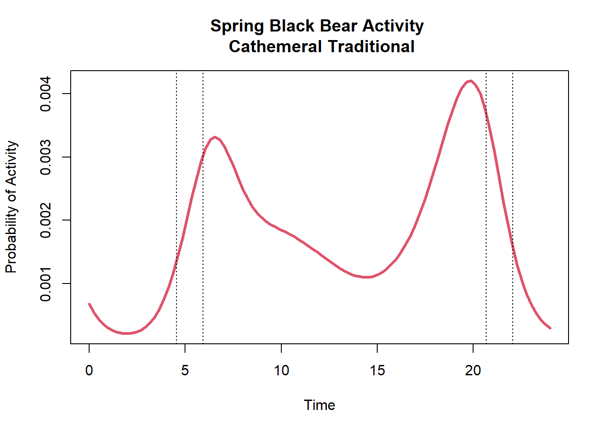
The vertical dotted lines indicate the periods of dawn and dusk for this sampling period. As we can see, black bears are mostly active during the day with a relative probability activity of 0.76. They are also have a high relative activity during twilight with a probability of 0.16.
Interestingly, if we use a set of diel phenotype hypotheses that are more specific in separating bimodal and trimodal activity (i.e., General hypothesis set; see definitions at Github repository) we would find the correspondent diel phenotype to be better described as Diurnal-Crepuscular.
## p.twi p.day p.night Hypothesis
## 1 0.1574589 0.7640512 0.0784899 Diurnal-CrepuscularThis difference in classification is because of the low amount of activity during the nighttime. It is hard to describe this activity pattern as Cathemeral, given that all three time periods (twilight, daytime, and nighttime) are not used. More specifically, black bears are concentrating their activity during twilight and daytime, thus the more accurate description would be Diurnal-Crepuscular.
10.4.6 Conclusion
Modeling animal activity patterns continuously throughout the 24-hour period provides important fine scale inference that is not achieved when aggregating data into blocks of time (e.g., daytime vs nighttime). However, it is important to then still be able to translate findings in relevant terminology based on diel phenotypes. The Diel.Niche R package provides an efficient way of summarizing findings from hierarchical trigonometric and cyclic cubic spline models.
Here, we provided a simple example to demonstrate the process of using the Diel.Niche R package](https://github.com/diel-project/Diel-Niche-Modeling/). However, there are a number of options we could also consider. For example, we could predict the diel phenotype for each site. This is most useful when we have site to site variation in terms of a random intercept and slope. We could also use covariates in our model and predict the supported diel phenotype across covariate values. Furthermore, we only predicted the corresponding diel phenotype using the estimated conditional mean activity. There is of course uncertainty associated with this mean activity level. To explore how supported the diel phenotype is when considering uncertainty from the conditional mean, we could predict activity curves at different levels of uncertainty or at certain confidence intervals to investigate uncertainty in the associated diel phenotype.
10.5 Info session
To facilitate reproducibility, we report information on packages and package versions used to create this tutorial.
## Warning: package 'grateful' was built under R version 4.2.3| Package | Version | Citation |
|---|---|---|
| activity | 1.3.4 | Marcus Rowcliffe (2023) |
| base | 4.2.1 | R Core Team (2022) |
| bookdown | 0.39 | Xie (2016b); Xie (2024b) |
| brms | 2.21.0 | Bürkner (2017); Bürkner (2018); Bürkner (2021b) |
| circular | 0.4.95 | Agostinelli and Lund (2022b) |
| Diel.Niche | 0.0.1.0 | Gerber et al. (2023) |
| distill | 1.6 | Dervieux et al. (2023) |
| ggpubr | 0.6.0 | Kassambara (2023) |
| GLMMadaptive | 0.9.1 | Rizopoulos (2023) |
| gridExtra | 2.3 | Auguie (2017) |
| knitr | 1.46 | Xie (2014); Xie (2015); Xie (2024c) |
| lmtest | 0.9.40 | Zeileis and Hothorn (2002) |
| MESS | 0.5.9 | Ekstrøm (2022) |
| mgcv | 1.8.40 | S. N. Wood (2003); S. N. Wood (2004); S. N. Wood (2011); S. N. Wood et al. (2016); S. N. Wood (2017b) |
| nimble | 0.12.2 | de Valpine et al. (2017); de Valpine et al. (2022b); de Valpine et al. (2022a) |
| overlap | 0.3.9 | Meredith, Ridout, and Campbell (2024) |
| rmarkdown | 2.27 | Xie, Allaire, and Grolemund (2018); Xie, Dervieux, and Riederer (2020); Allaire et al. (2024) |
| suncalc | 0.5.1 | Thieurmel and Elmarhraoui (2022) |
| tidyverse | 1.3.1 | Wickham et al. (2019) |
## R version 4.2.1 (2022-06-23 ucrt)
## Platform: x86_64-w64-mingw32/x64 (64-bit)
## Running under: Windows 10 x64 (build 19045)
##
## Matrix products: default
##
## locale:
## [1] LC_COLLATE=English_United States.utf8 LC_CTYPE=English_United States.utf8
## [3] LC_MONETARY=English_United States.utf8 LC_NUMERIC=C
## [5] LC_TIME=English_United States.utf8
##
## attached base packages:
## [1] grid stats graphics grDevices utils datasets methods base
##
## other attached packages:
## [1] grateful_0.2.4 Diel.Niche_0.0.1.0 suncalc_0.5.1 brms_2.21.0 Rcpp_1.0.10
## [6] nimble_0.12.2 circular_0.4-95 overlap_0.3.9 suntools_1.0.0 activity_1.3.4
## [11] stringr_1.5.1 purrr_1.0.2 readr_2.1.2 tibble_3.2.1 tidyverse_1.3.1
## [16] forcats_0.5.1 lmtest_0.9-40 zoo_1.8-10 lubridate_1.9.3 tidyr_1.3.1
## [21] mgcv_1.8-40 nlme_3.1-157 ggpubr_0.6.0 GLMMadaptive_0.9-1 ggplot2_3.5.1
## [26] gridExtra_2.3 dplyr_1.1.4 bookdown_0.39
##
## loaded via a namespace (and not attached):
## [1] readxl_1.4.0 backports_1.4.1 systemfonts_1.0.6 plyr_1.8.7 igraph_1.3.4
## [6] lazyeval_0.2.2 splines_4.2.1 rstantools_2.3.1 inline_0.3.19 digest_0.6.29
## [11] htmltools_0.5.8.1 fansi_1.0.3 magrittr_2.0.3 checkmate_2.3.1 sfsmisc_1.1-18
## [16] tzdb_0.3.0 mosaicCore_0.9.2.1 modelr_0.1.8 RcppParallel_5.1.5 matrixStats_1.3.0
## [21] timechange_0.3.0 colorspace_2.0-3 rvest_1.0.3 textshaping_0.3.7 haven_2.5.0
## [26] xfun_0.44 crayon_1.5.2 MESS_0.5.9 jsonlite_1.8.8 Rglpk_0.6-5.1
## [31] glue_1.6.2 geepack_1.3.9 polyclip_1.10-4 gtable_0.3.5 V8_4.2.1
## [36] distributional_0.4.0 car_3.1-2 ggformula_0.10.2 pkgbuild_1.4.4 rstan_2.32.6
## [41] multinomineq_0.2.6 abind_1.4-5 scales_1.3.0 mvtnorm_1.2-4 DBI_1.2.2
## [46] geeM_0.10.1 rstatix_0.7.2 viridisLite_0.4.2 units_0.8-5 ggstance_0.3.6
## [51] proxy_0.4-27 stats4_4.2.1 StanHeaders_2.32.6 htmlwidgets_1.6.4 httr_1.4.7
## [56] posterior_1.5.0 ellipsis_0.3.2 pkgconfig_2.0.3 loo_2.5.1 farver_2.1.2
## [61] sass_0.4.9 dbplyr_2.2.1 utf8_1.2.2 reshape2_1.4.4 tidyselect_1.2.1
## [66] labeling_0.4.3 rlang_1.1.3 munsell_0.5.1 cellranger_1.1.0 tools_4.2.1
## [71] cachem_1.0.6 cli_3.6.1 generics_0.1.3 broom_1.0.5 ggridges_0.5.6
## [76] evaluate_0.23 fastmap_1.2.0 yaml_2.3.8 ragg_1.3.2 knitr_1.46
## [81] fs_1.5.2 slam_0.1-50 xml2_1.3.6 compiler_4.2.1 bayesplot_1.11.1
## [86] rstudioapi_0.16.0 plotly_4.10.4 curl_4.3.2 e1071_1.7-14 ggsignif_0.6.4
## [91] reprex_2.0.1 tweenr_2.0.2 bslib_0.7.0 stringi_1.7.8 highr_0.10
## [96] Brobdingnag_1.2-9 lattice_0.20-45 Matrix_1.6-5 classInt_0.4-10 tensorA_0.36.2.1
## [101] vctrs_0.6.5 pillar_1.9.0 lifecycle_1.0.4 jquerylib_0.1.4 bridgesampling_1.1-2
## [106] data.table_1.15.4 cowplot_1.1.3 QuickJSR_1.1.3 R6_2.5.1 renv_1.0.3
## [111] KernSmooth_2.23-20 codetools_0.2-18 boot_1.3-28 MASS_7.3-57 assertthat_0.2.1
## [116] withr_3.0.0 parallel_4.2.1 hms_1.1.1 terra_1.7-71 quadprog_1.5-8
## [121] labelled_2.10.0 class_7.3-20 coda_0.19-4.1 rmarkdown_2.27 carData_3.0-5
## [126] sf_1.0-16 ggforce_0.4.1`r if (knitr:::is_html_output()) ’